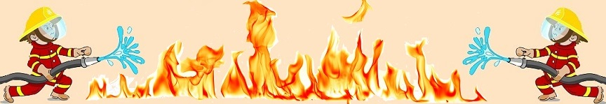

Grass
- ""
- ""
- ""
- ""
A wildland apparatus is mainly used for fires that are in difficult areas to get to with little to no road structures. The reason they are better for these situations is because they are built to be lighter and more manuverable. If you attempted to take a normal size fire truck in these areas you could get stuck and be put in a dangerous situation.A good example is if a farmer has his field start on fire because his combine or tractor overheated and started the dry crop on fire. Driving through a soft field can be challenge for any type of vehicle. Another common example is when someone driving down the road decides it is a good idea to flick their cigarrette out the window during the dry season and starts a fire which spreads from the road ditch to a field or tree line.
| Specifications of the Widland Apparatus. | ||
|---|---|---|
| Chassis: | Transmission: | Allison 3000 EVS Transmission |
| Wheelbase: | 174 inch Wheelbase | |
| Engine: | Cummins L9, 350HP Engine | |
| Seating Capacity: | 5 | |
| Water Features: | Tank Capacity: | 500 Gallons of Water |
| Foam Capacity: | 20 Gallons of Foam | |
| Discharges: | Rear | |
| Body: | Material: | High Strength Aluminum Body |
| Lighting: | Whelen LED Warning & Scene Light Package | |